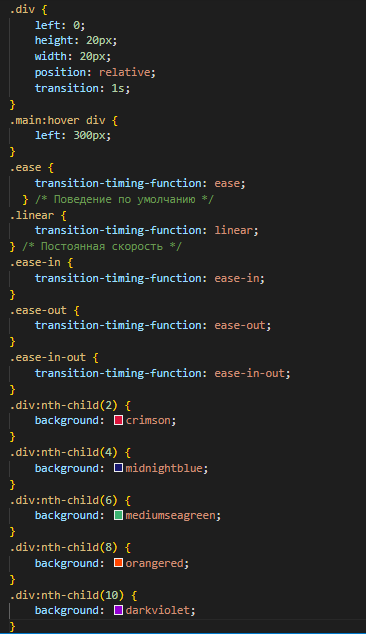
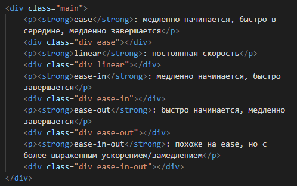

Переходом называется плавная смена свойств элемента при наведении на него курсора мыши. Самый простой способ задать стили для различных состояний — это воспользоваться псевдоклассами :hover, :focus, :active и :target. При использовании псевдокласса :hover изменение происходит мгновенно, transition же позволяет задать продолжительность и метод перехода.
Переходы в CSS позволяют плавно перейти от одного состояния элемента к другому. Работает это так, что отдельные свойства анимируются от начального состояния до конечного.
Есть четыре свойства, связанных с переходами в целом:
-
transition-property: какие свойства анимируются;
-
transition-duration: как долго длится анимация;
-
transition-timing-function: как вычисляются промежуточные состояния;
-
transition-delay: анимация начинается через некоторое время.
Вы можете установить каждое свойство CSS по отдельности или использовать сокращённую версию: transition. В этом случае, только transition-duration является обязательным.
Имейте в виду, что переход представляет собой специфический вид анимации, где есть только начальное и конечное состояние.
transition-duration является единственным стилевым свойством, необходимым для создания перехода. Оно может быть установлено либо в секундах (2s), либо в миллисекундах (100ms).
Если вы хотите, чтобы ваш переход длился полсекунды, то можете написать 0.5s или 500ms. В зависимости от того, насколько быстро вы хотите, чтобы длился переход, может быть проще и/или быстрее писать одну единицу.
Только треть свойств CSS может быть анимирована - только для свойств, которые имеют различимую точку на полпути. Цвета, размеры шрифтов и тому подобное могут переходить от одного значения к другому, поскольку у них есть распознаваемые значения в промежутке друг с другом. У свойства display, например, не может быть перехода, поскольку оно не имеет никакой средней точки. Набор наиболее популярных свойств, к которым применим переход следующий.
| background-color |
left |
padding |
background-position |
letter-spacing |
right |
| border-color |
line-height |
text-indent |
border-width |
margin |
text-shadow |
| border-spacing |
max-height |
top |
bottom |
max-width |
vertical-align |
| clip |
min-height |
visibility |
color |
min-width |
width |
| crop |
opacity |
word-spacing |
font-size |
outline-color |
z-index |
| font-weight |
outline-offset |
height |
outline-width |
|
|
По умолчанию у свойства transition-property значение all. Это просто означает, что будут анимироваться все возможные свойства.
Вы можете разрешить анимацию только одного или нескольких свойств.
Функция времени определяет, как вычисляется значение каждого свойства во время перехода.
По умолчанию переход равен ease: он ускоряется в начале и замедляется в конце.
Вы можете решить, что переход будет происходить с постоянной скоростью. Функция времени может ускорить или замедлить переход.
Самый простой способ визуализации функций времени заключается в изменении свойств позиционирования, вроде left.


ease: медленно начинается, быстро в середине, медленно завершается
linear: постоянная скорость
ease-in: медленно начинается, быстро завершается
ease-out: быстро начинается, медленно завершается
ease-in-out: похоже на ease, но с более выраженным ускорением/замедлением
Имейте в виду, что все переходы занимают одинаковое время (1 секунда).